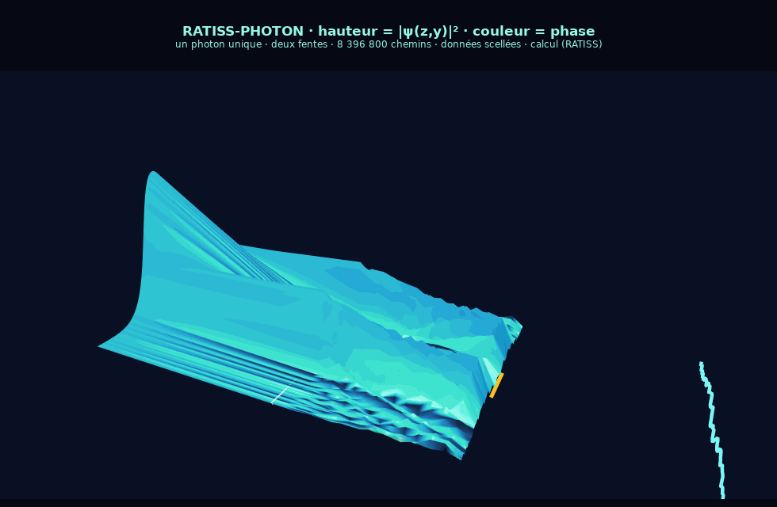

Un photon unique, deux fentes, 8 396 800 chemins · RATISS Labs · Yaoundé · 27/09/2026
Rotation à la souris · zoom à la molette · relief réglable — JavaScript pur, aucune dépendance. Si ce bouton ne s'ouvre pas : lien direct …/visualisation.html ou télécharge le fichier depuis le dépôt GitHub et ouvre-le hors ligne (il est 100 % autonome).
· fidélité somme-de-chemins ↔ ondes : 95,9 – 96,8 % (fenêtre de Canton : 95 – 98,5 %)
· le hasard ÉMERGE du bain thermique : à T = 0 K, 1 seule position d'impact sur 400
· contre-flux fantômes mesurés entre les franges, flux net ≈ 0 · sceau SHA-256 : 32/32

hauteur = |ψ(z,y)|² · couleur = phase — générée depuis les données scellées du dépôt.